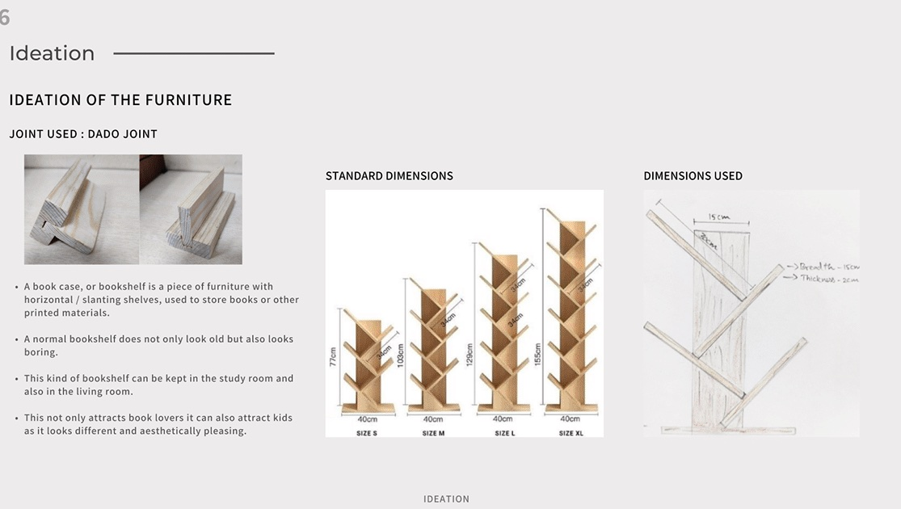
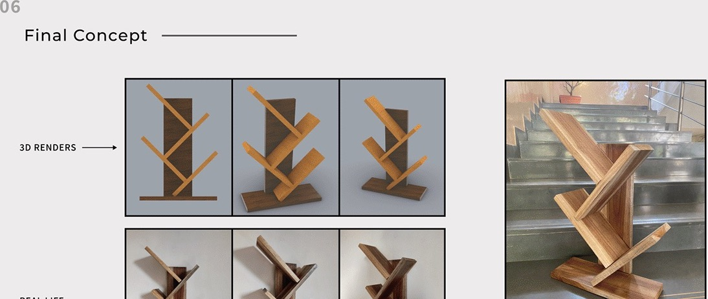

Understanding the current design
Photographs of someone taking goods from a standard shelf showed postures with high to very high risk, the kind of discomfort from bad ergonomics that is a leading cause of lost time. The top and bottom shelves are used less and are hard to reach; visibility is hampered by shelves blocking the field of vision; and there is unused space between items. Items are harder to locate and taking inventory is more difficult.
The solution: close-set shelves positioned at eye level, objects easy to locate, and space optimised to the size of what is stored. The furniture can be wall mounted at chest level, there are no visibility problems, and storage is better organised and easy to inventory.
Ideation
The joint is a dado joint. Standard tree shelves come in four sizes, from 77 cm to 155 cm tall at 40 cm wide; the dimensions used here came from the anthropometric measurements, with 15 cm arms and 2 cm thick boards. A bookshelf that does not look old or boring, for the study or the living room, and one that attracts kids as much as book lovers.

Final concept

The shelf was built in wood and finished, with each arm let into the trunk with a dado joint.